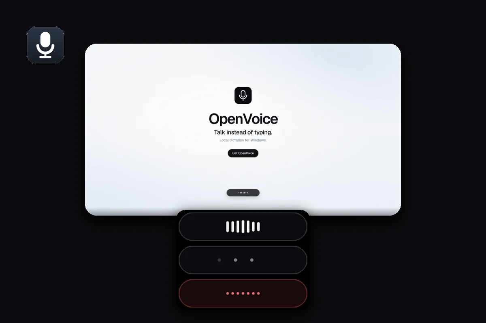
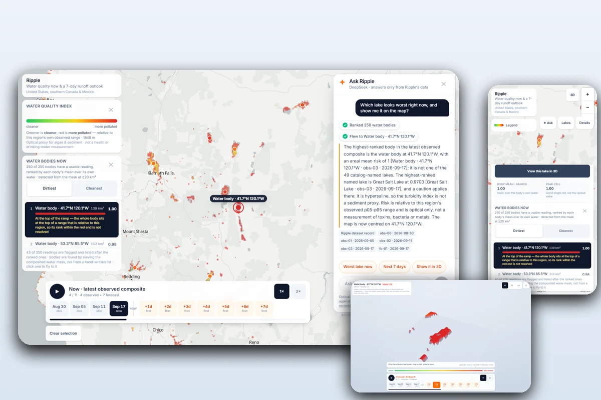
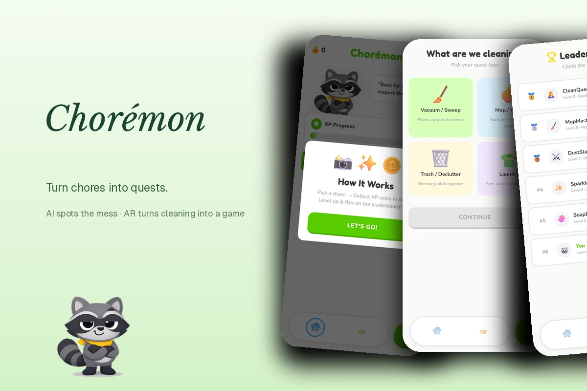

01
Learn by Building
I understand systems best by shipping them end-to-end — the model, the backend, the interface — and then checking the result against reality.
Hey 👋, I'm Farell
I design and build local-first AI tools and data-driven products — from a fully offline dictation app to a satellite water-quality map and an AI-powered AR chore game.
I understand systems best by shipping them end-to-end — the model, the backend, the interface — and then checking the result against reality.
OpenVoice runs its speech model on your own machine — no cloud, no account, no API key. Tools should respect the people using them.
Ripple refuses to claim more than the data supports. Every number I ship should trace back to its source — or not ship at all.
A feature is finished when the interaction is finished — a pill that never steals focus, a map that explains itself.
Four principles behind everything I make — from the model down to the last pixel of the interface.
From local-first AI tools to data-driven maps — here's a look at the work I'm proud of.

A fully local push-to-talk dictation app for Windows. Hold a key, speak, release, and the text lands in whatever window has focus — faster-whisper runs on your CPU or GPU.

Water quality now — and where new sediment is likely over the next seven days — computed from key-free Sentinel-2 and weather data, with an assistant that answers only from the shipped records.

Chorémon turns a messy room into a quest board: Gemini-powered vision finds the mess, WebXR coins and a Unity/ARCore tile grid turn cleaning into gameplay, and a snarky raccoon named Rascal keeps you moving. MLH Best Use of Gemini API — Hack Indy 2026.
I'm always open to discussing new projects, creative ideas, or opportunities to be part of your visions.